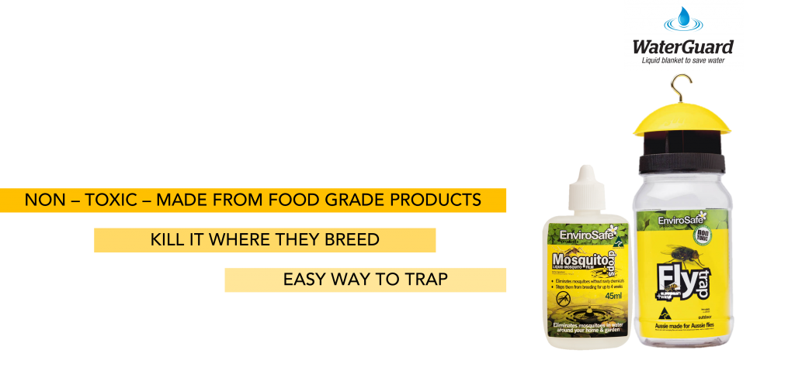
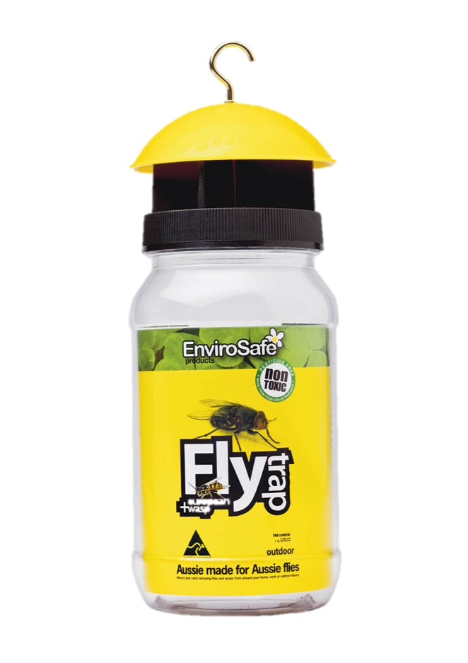

A New Generation Application
We carry the technology which forms a thin film on the surface of water bodies. Substantial resources have been channelled and dedicated to research and develop a core range of products.
Products


200 Jalan Sultan, #03-11, Textile Centre
Singapore 199018
Mobile : +65 90280690
Email : nixit@newsciencetech.com